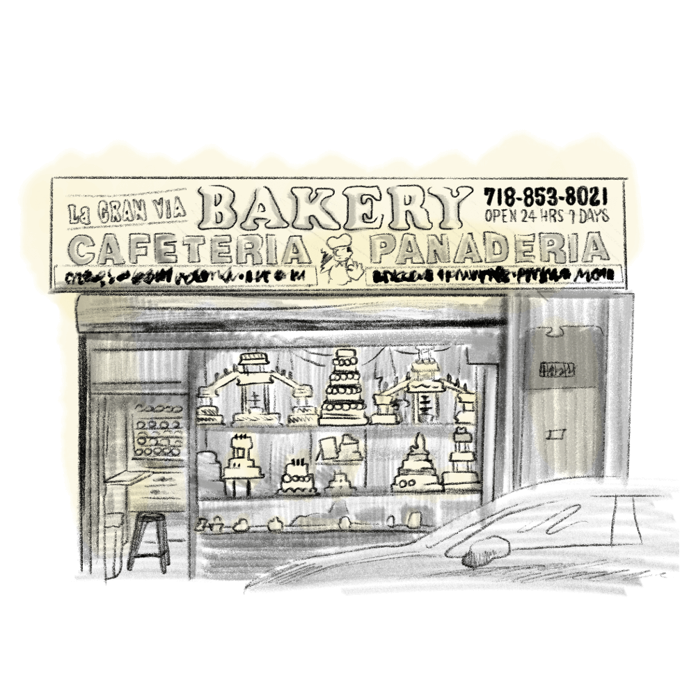
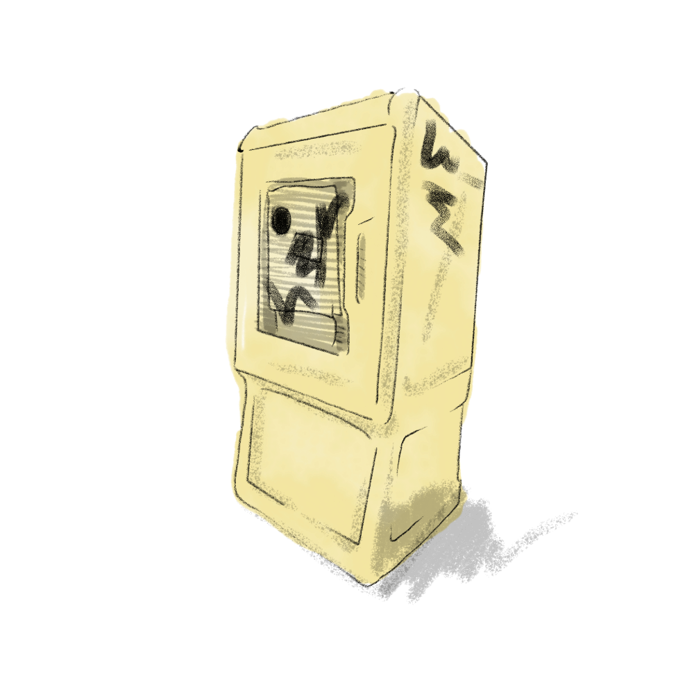

0 ABOUT
Overarchivin: Code, Fab, Future Relatedness
Overarchivin: Code, Fab, Future Relatedness is an inquiry-based collaborative project focusing on the housing conditions in Sunset Park, Brooklyn. The project aims to navigate the intersection of self, objects, and everyday living through lectures and collaborative making sessions involving code, fabrication, and technology.
This project views archiving as a collaborative act for understanding, mapping, and extracting to create a generative space for learning about human-object relations.
1. ORIGIN
This project stemmed from an online workshop Yu & Tzu had held at CCFEST & PCDTW, which was called 'I AM: CODING MY THING.'
In this workshop, we invited participants to put their personal belongings on the axes of certain criterias: which can be release-hold, personal-public, or other criterias, depending on how participants define their object group.
In the classroom, each participant will have their own object map, visualizing the object-daily life relation. Through p5js, Yu will lead the class to transfer the map into a coded shape, which can be interactive through clicking and pulling with the mouse.
Overarchivin started from here…
“How to look at object-human relation, when this map is seen? what kind of discussion can be triggered?”
2. SUSTAIN
With the support from Pratt STEMplant, we got a chance to continue this project with a more diverse approach. Instead of randomly choosing objects to explore, we turned our vision to where we lived, our neighborhood, Sunset Park, and those objects “lived” near us.
We admired how artists can contribute as a researcher, like Jeffrey Yoo Warren’s research project with Library of Congress, Seeing Lost Enclaves–exploring the potential for multifaceted remembrance and correction through virtually reconstructing the landscape and the scenes of Providence’s Chinatown with the supporting archives. Another project, Objournalist (物敘）, found by an ordinary Hong Konger, focuses on curating objects to record and tell Hong Kongers stories, including activism in Hong Kong and their protesting style.
3. The Objects
Makers create archives for reviving their fading/past neighborhood, to uphold and document their cultural belongings… As resident-not-as-citizens, Yu and I slept on a question: What we’ve learned as a resident-not-as-citizen in Sunset Park through the object curating? By speculating, embedding ourselves into the archive of residency history, we situate OVERARCHIVIN as a portal for resident-not-as-citizens' object collection, to document and explore the reflexive nature of daily objects.
4. Archive list
-
Kiddie Ride
- Location: 40.6390411, -74.0096338
- Dialog:
When I look at this Kiddie Ri, it reminds me of my childhood, when me and my sister went to the doctor, or the night market, we're always excited to try on different mini cars. These gaming machines are often installed on the street, beside the clinic, the medicine shop for parents to let kids play on it as a reward.
- Tag: Social function, parenting, play
-
Egg Tart
- Location: 5617 8th Ave, Brooklyn, NY 11220
- Dialog:
Egg tart is one of my favorite desserts. It is not always available in bakeries, but commonly available in Chinese bakeries and bake shops.
- Tag: Refreshment, energy, healing from familiar taste
-
Floral Cross
- Location: 4401 5th Ave, Brooklyn, NY 11220
- Dialog
I'm curious about how the flora aesthetic is presented differently, relating to religion, in different cultures.
- Tag: Aesthetic, cultural observation, the newcomers often feel curious about this exotic aesthetic object, but seldom dive into it.
-
Decoration on the ceiling
- Location: 4411 5th Ave, Brooklyn, NY 11220
-
Dialog
I captured this because of the same obsession and curiosity to the aesthetic from different cultures.
-
Chinese Text as Pattern

- Location: 40.6473990, -74.0078270
- Dialog:
諧音梗 as a joking methods has went viral in recent years. This kind of joke is similar to ”bagel“ and ”bae.”
-
La Gran Via Bakery
- Location: 4516 5th Ave, Brooklyn, NY 11220
-
Dialog:
I captured this for documenting my curiosity toward the history and the culture of the Mexican bakery culture.
-
Weird model

- Location: 4405 5th Ave, Brooklyn, NY 11220
-
Dialog
The weird model appeared in a random store that sold clothes for climbing, for biking activities. The funny thing is that they just put all the stuff out there.
-
Lucky Charm in the Window

- Location: 4505 5th Ave, Brooklyn, NY 11220
-
Dialog
I captured this for documenting my curiosity toward the history and the culture of the Mexican bakery culture.
-
Newsstand
- Location: (N/A)
-
Dialog
The newsstand stores news in the public space and to me, it serves as a station where the residents can connect and gather to consume new knowledge every day.
- Tag: onboarding, knowledge hub, community engagement, catch up, check in
5. Further Reading
- Making a Global Immigrant Neighborhood: Brooklyn's Sunset Park, Tarry Tim, 2014
- Sunset Park Is Not For Sell, Dianisbeth Acquie, 2022
- NYC Panning: Community District Profiles-Brooklyn Community District 7
- Our Streets Our Stories (OSOS), Brooklyn Public Library
- Seeing Lost Enclaves: Relational reconstructions of erased historic neighborhoods of color is a project by Jeffrey Yoo Warren